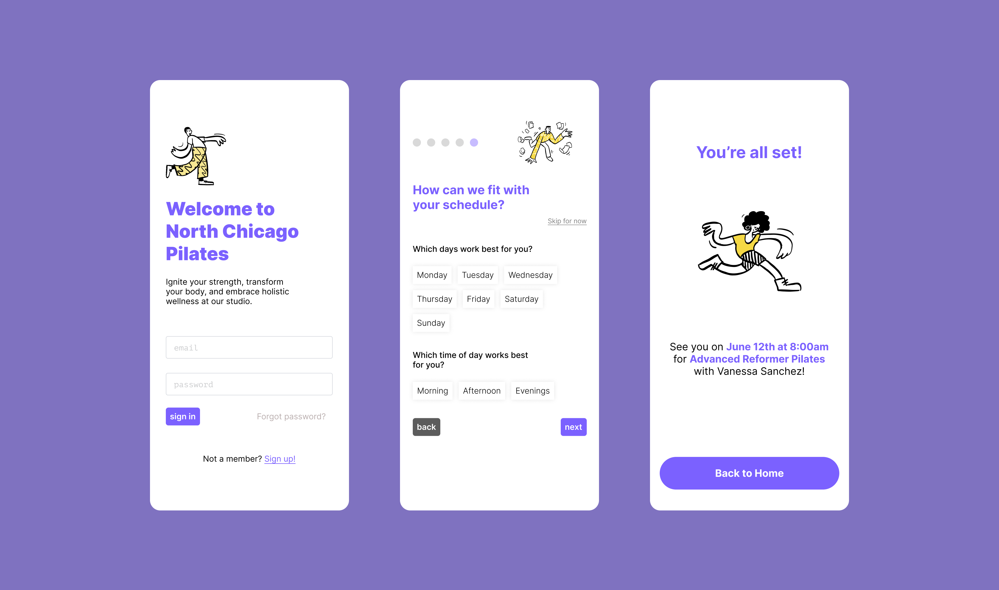
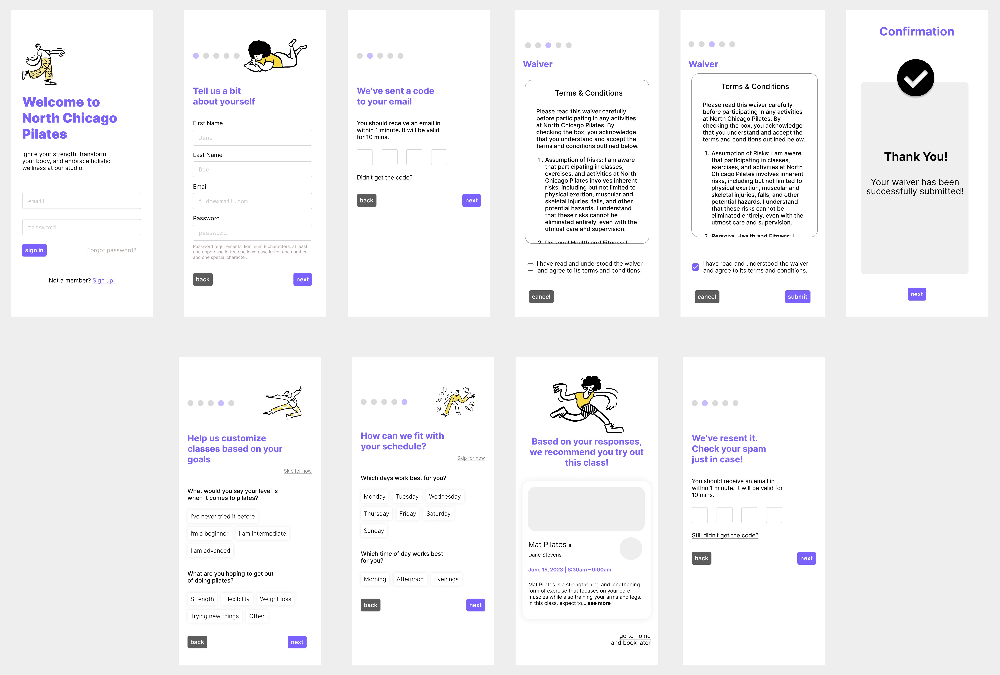

An integrated experience for streamlined class booking and management.
UX Research / 2023 / DePaul HCI 440
How did North Chicago Pilates come to be?
Over the course of three months, my team–of myself and three others–developed this project for HCI 440 at DePaul, with the aim of creating an integrated experience that bridges digital and real-world experiences.
We noticed that class registration can be difficult; registering for studios and classes can require too much time spent at the front desk of a gym, and searching for classes can be equally time-consuming. There is also a lack of pricing and payment transparency, and of clarity about class times and what to bring to a class.
Our goal is to help users feel empowered, excited, and in control of their personal fitness experience, and create a transparent and trustworthy class purchasing experience.
Who are we building for?
We conducted a total of eight contextual inquiries and created the following personas by consolidating what we learned:
Meet Jill, a 24-year-old graduate student who is interested in signing up for a class at North Chicago Pilates after hearing her best friend rave about how transformative the classes were for strength and posture. Despite trusting her friend, Jill has always been a cautious person who always does her research before committing to anything. She believes strongly in trying things out before committing as she is careful with her money as she is still a student. As she is a student, finding a class time that works with her class schedules and extracurriculars is also important to her.
Meet Luca, a 31-year-old grammar school teacher and regular Pilates student at the North Chicago Pilates Studio. Luca has been practicing Pilates at the studio for the past year, and now he is seeking to challenge himself more with a more intense Pilates class. He doesn’t want to rush and pick a class too advanced for himself, so during his breaks at work, Luca browses through the “recommended for you” classes on the application to view the descriptions, instructor ratings, and schedules for different classes. When a class sparks his interests, he saves them to his “favorites” to review at a later time.
What will our users need?
From these interviews, we also created a concept analysis table, as shown below. Additionally, we created a list of functional, social, quality, and data requirements.
| Concept | Attribute | Operations |
|---|---|---|
| User | ||
| Class | class type, instructor, location, length/duration, difficulty, cost | check in, share, view, search for, favorite |
| Gym | proximity, address, hours, parking info, gym info | navigate, share, view, check-in |
| Location | address (street, zip), phone number | view |
| Reservation | time, day, availability | make, cancel, view |
| Instructor | name, availability, specialization/certifications | contact, view |
| Account | favorites, saved classes, bookings, username, password, payment info, user info (phone, email) | view, edit, sign up, delete, view |
| Payment | credit card number, name, address | add, remove, update info, view |
| Membership | price, name, acc number, membership type | pause, cancel, renew, join, view |
| Feedback | instructor, student, feedback info | view |
| Item | item type (health supplements, apparel), price, size, quantity | buy, reserve, share, view |
Time to create and refine our product!
After creating our first prototype, we conducted eight user tests for two specific user flows: new users and returning users. We had new users sign up for a new account and input preferences and get recommendations for their first class, while returning users signed up for a class using credits through the class favorites page. Our key findings were the following:
- The sign in needed to be more visible, since many users assumed that the text fields were for signing up, not signing in.
- The entire class card needed to be clickable instead of just the “read more” link and the description, since many users did not know where to click to view the page.
- The password requirements for the text could be bigger; some users immediately began typing without reading them.
- The star icon for the favorites page in the navbar may be ambiguous since one user did not click it when trying to find the favorites page.
- Many users liked the layout of the page. They said it was not too complicated and that it felt similar to other applications they’ve used.
We made changes to our prototype design according to these findings, as shown below.
New user flow
Returning user flow

What did we learn?
✽ The value of contextual inquiries was definitely strengthened for us; going into this project, we expected users to be interested in having the ability to communicate with instructors outside of class, but we found the opposite to be true.
✽ There were four of us working on this project, and we realised after completing our interviews that using data capturing tools like Airtable would have simplified our data consolidation process.
What's next?
✽ We would love to create a high-fidelity version of this project that is fully built outside of these two specific user flows.